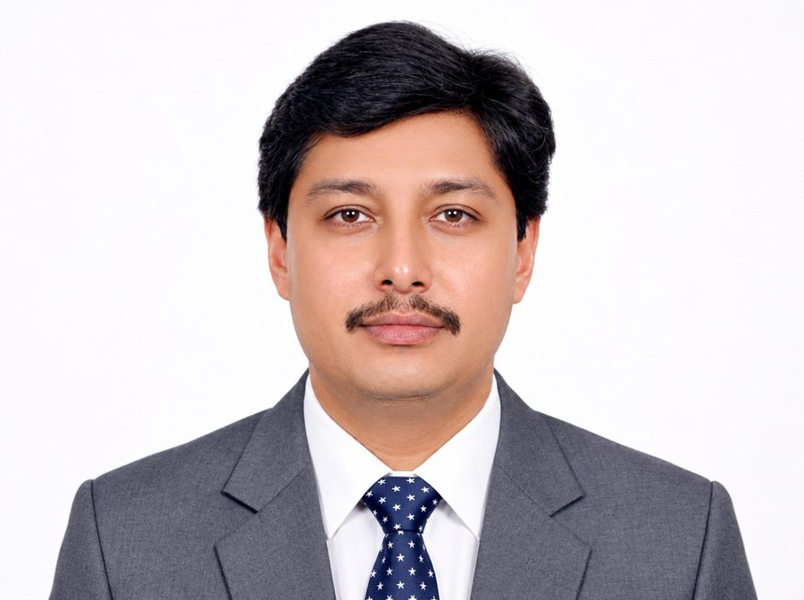

Senior Project Manager, Software Architect & Technical Lead
Agile/Scrum Delivery · AWS, PHP, MERN · Microservices · Digital Transformation · AI-Assisted Development · Automation · 21+ Years
Technical Project Manager and Solution Architect with 21+ years in IT: 8+ years in project management and 13+ in hands-on software development. I lead complex, end-to-end projects using Agile (Scrum/Sprint), Waterfall and hybrid methods, with expertise in IT solutions delivery, full-stack development, microservices and cloud-native architectures on AWS.

About me
I apply Forward Deployed Engineering (FDE) practices in client-facing technical delivery: turning on-site discovery and business workflows into scalable automation solutions, and defining the architecture, technology stack, SRS/SOW, estimates and MVP roadmaps. I continue FDE research and development (R&D) to strengthen client delivery.
I use vibe coding and AI-assisted development to speed up delivery, improve code quality, and automate documentation, testing and workflows. I am currently upskilling in Python and machine learning to support data-driven, AI-augmented project delivery.
I have managed and mentored teams of 18+ engineers across global client engagements, with proven strength in risk management, stakeholder communication, resource planning and documentation.
Featured projects
Frost: cloud content system for learning platforms
Associate Technical Architect, LearningMate, 2021–2022
Powers Canvas, Blackboard, Moodle and Brightspace.
Read the case studyPhotography post-production SaaS
Lead Engineer, BizBox Publishing (US client), 2018–2021
Significantly shorter release cycles.
Read the case studyVoIP web conferencing platform
Associate Software Architect, Asergis (UK group), 2016–2018
Instant and recurring meetings used by customers worldwide.
Read the case studyCurrent focus: AI-assisted delivery
I use AI tools to speed up delivery without lowering quality: vibe coding with Claude Code, Cursor, GitHub Copilot and Lovable; workflow automation with n8n and Microsoft Copilot Studio; Python, Pandas and machine learning; and Forward Deployed Engineering research for client delivery.
See my n8n inquiry-to-invoice automation · Education and certificates